Transformer une exécution chaotique en système synchronisé et piloté
Désynchronisation terrain → attentes, erreurs qualité, arrêts ligne
Mise en place d’un système visuel de synchronisation et de règles opérationnelles
Process stabilisé, attentes réduites et transitions maîtrisées
Outil visuel utilisé par les équipes pour piloter les changements en temps réel

Modèle décisionnel de changeover
Synchronisation, validation des ressources et point GO / NO-GO

Visual roll capacity gauge
Estimation immédiate des bobines pour déclencher l’approvisionnement au bon moment
Ligne de conditionnement agroalimentaire multi-recettes (fromages), avec dépendance forte entre production, logistique et encaissage.
Les changements de recette sont planifiés mais instables à l’exécution, générant pertes de temps, erreurs qualité et stress opérateur.
Les pertes ne provenaient pas d’un manque de ressources, mais d’un manque de points de contrôle dans l’exécution.
Alignement des équipes en temps réel
Réduction des temps morts
Moins d’erreurs lors des transitions
Réduction des arrêts non anticipés
Le problème des changements de recette n’est pas la planification, mais l’absence de structure dans l’exécution.
Excel pour le pilotage, outils visuels terrain (tableaux, standards), approche Lean (SMED, standardisation, poka-yoke).
Ce projet montre ma capacité à concevoir des systèmes simples, robustes et directement utilisables sur le terrain industriel.
Me contacter